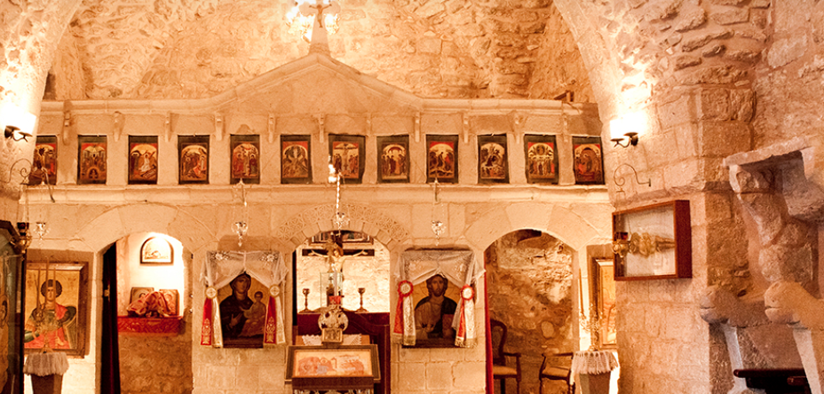
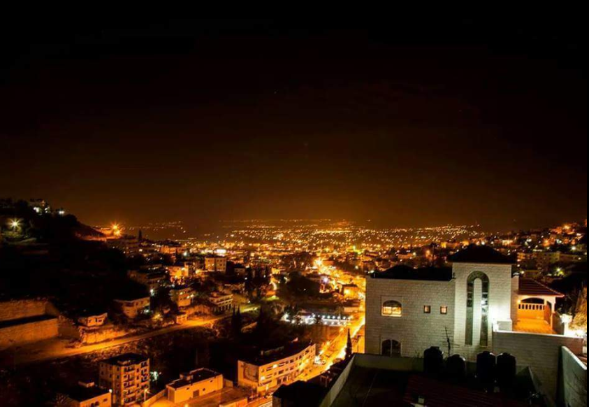

is a city located on the edge of a level plain known to the locals as Marj Ibn Amer and mentioned in the Bible as Jezreel Valley or the Plain of Esdraelon. Modern Jenin is a picturesque town surrounded by olive and almond groves. Its fertile surroundings were a perfect place to settle as early as the Canaanite times, when it was called En Gannim meaning ‘the spring of gardens.’ The town is also mentioned in many historical writings including the Egyptian, Babylonian, and Roman records. Jenin played an important role in the past as the city on the crossroads between the sea and the northern and eastern regions of the country. The historical Via Maris route passed through this area, as well as other internal routes connecting the mountains to the coast. Local tradition states that Jenin or Ginaea, as it was known in the Roman times, was crossed by Christ on a number of occasions. A church was built there during the 6th century AD. Its remains have been uncovered near the present day Grand Mosque. During the Crusader period, Jenin was a small but important village. In 1187, Jenin was captured by Salah Ad-Din. Later, in the 13th century, it become an important town because the Mamluks, fearing Crusader invasions, destroyed the coastal towns and fortified several inland cities including Jenin. The Mamluk prince Tajar Al Dawadar built a caravanserai, a sabil (spring), and several public baths here.
The northernmost city in the West Bank, Jenin is lively, attractive and well worth the journey. Its centre is a hive of activity, with stalls lining wide streets and carts piled high with fresh produce. Jenin has seen a great deal of conflict, of course, and from the ashes have risen some astounding community projects, primarily the Freedom Theatre based in the heart of the Jenin refugee camp. This centre teaches arts and drama as well as putting on regular shows at the Jenin Cinema. Meanwhile, there is an orchestra called Strings of Freedom founded by an Israeli Arab, Wafaa Younis, who travels from her home in central Israel to teach music to the youth. Jenin is a major centre of trade for the surrounding towns and villages of the north, and the wider governorate is also home to the impressive Arab American University. It is an attractive city, built on the slopes of a hill and surrounded by orchards of fig and palm trees. There is an excellent visitor centre to help orientate and educate tourists, a beautiful Old City too and some great attractions just a short drive out of the centre. Jenin was actually the first city to be freed from Israeli occupation in November 1995 after 27 years. It was transferred to the Palestinian Authority under the Oslo Agreement. 
The best place to start any visit to Jenin is at the visitor centre, which is fairly modern and extremely informative. On the second floor there is a large map followed by eight detailed boards which pick out the must-see destinations in and around the city. A multitude of information leaflets is available, as well as a further small museum lined with various historical titbits. The highlights of the city itself are undoubtedly the buzzing market with all its smells, sounds and colour, and the quieter and charming streets of the Old City. Tell Jenin is the hill which hosted the oldest settlement in Jenin, although little is visible today barring some extremely old and weathered stone houses. Jenin camp is not to be missed, although a local guide is recommended to help navigate the maze of streets and apartment blocks. Inside the camp there are poignant monuments to fallen martyrs (many of whom died younger than 18) and a centre called the ‘Not To Forget association’. It is so called to remind the refugee families living in the camp that one day they will return to their homes. The shining light of the camp is undoubtedly the Freedom Theatre, which has risen from the ashes to become a powerful, unifying force. Outside the city centre, Burqin’s pretty Christian church atop a hill and the Balama tunnel are two excellent trips.
Jenin is blessed with a small but varied dining scene.Awtar restaurant in the centre stands out for its excellent rooftop (too hot to eat in summer) and delicious food. But Jenin’s shawarma restaurants are also some of the best in the whole of Palestine, due to the fact most let you add your own generous helpings from the scrumptious salad bar.
Where To Stay
There are two hotels as of December 2015, Northgate and Haddad. Both provide a good number of clean, smart rooms. For travellers on a budget and looking for more of a backpacker experience, there is the great value Cinema Jenin guesthouse.
Jenin camp
with its population of 14,000 residents, borders the Jenin municipality and is the northernmost camp in the West Bank. It has been the scene of significant suffering, having been established in 1953 after the original camp in the area was destroyed in a snowstorm. Jenin camp was also severely affected by the second intifada, when the Israeli Defense Forces occupied the camp in 2002 after ten days of intensive fi¬ghting. More than 400 homes were destroyed in the operation, with hundreds more being severely damaged. More than a quarter of the population was rendered homeless.